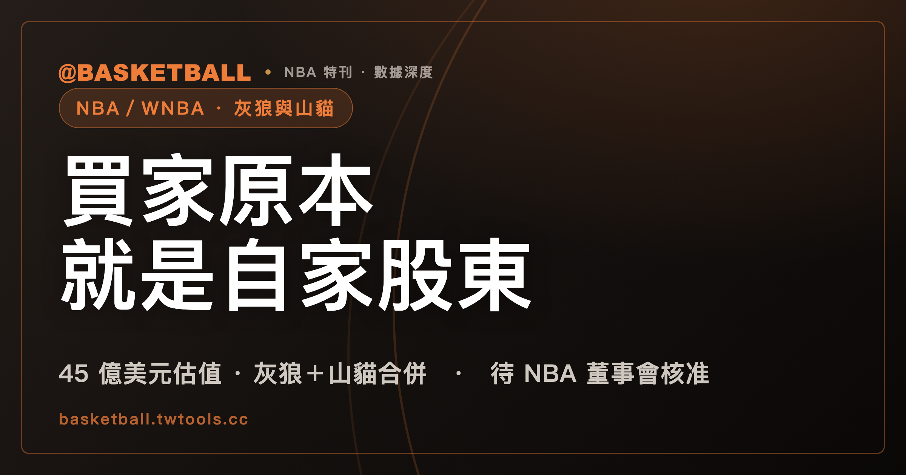

灰狼與山貓談成控股權轉讓，買家 Marc Stad 原本就是自家股東
這筆交易的買家不是外面來的：Marc Stad 原本就是明尼蘇達灰狼與山貓所有權團隊裡的少數股東，這次協議換的是股東桌上的位置，不是新老闆進場。45 億美元是灰狼與山貓兩隊的合併估值，不是成交價；依目前公開資料，也拆不出任一隊的單獨身價；交易仍待 NBA 董事會核准，會議訂在 9 月 15、16 日。

NBA／WNBA 專題｜球團易主與聯盟制度
先看一件怪事。
明尼蘇達灰狼與山貓現在的所有權團隊裡，本來就坐著 Marc Stad。依 ESPN 報導，他是投資機構 Dragoneer Investment Group 的創辦人，並持續擔任該機構的 managing partner；在洛爾（Marc Lore）與 A-Rod（Alex Rodriguez）的所有權團隊底下，他原本就是一名少數股東。
2026 年 8 月 21 日，Stad 一方與 Lore 一方達成協議，Stad 將買下 Lore 多數持股中的大部分；若獲聯盟核准並完成交易，Stad 將成為控股老闆與最大股東。協議雖已達成，交易本身尚未完成、尚未交割，控股權也尚未移轉，董事會投票還沒進行。NBA 董事會預定於 2026 年 9 月 15、16 日開會，依 ESPN 報導，屆時聯盟預期會核准這筆交易——是預期，不是已排定表決，更不是必然核准。當事人聯合聲明用的原句是「pending league approval」。
換句話說，這不是一名局外人第一次踏進灰狼與山貓的股權結構，而是既有股東之間換位子——原本股權較小的 Stad，要換成股權最大、拿到治理主導權的那一個。
上一次核准是 14 個月前的事，不是「時隔一年」
Lore 與 A-Rod 2021 年入股灰狼與山貓的所有權團隊，原始合約設計為首期以 15 億美元估值計價，後續三期各加 4%。拿到完整控股權的過程，兩人曾與前老闆泰勒（Glen Taylor）進入仲裁——三人仲裁小組於 2025 年 2 月 10 日以 2 比 1 裁決 Lore 與 Rodriguez 勝訴，爭點是自動延長 90 天的條款。這場裁決的效果，是讓收購程序與 NBA 的核准申請得以繼續，這是官方聲明的原話。其後依序是：泰勒決定不提挑戰（AP 報導）→ NBA 董事會 2025 年 6 月 24 日全票核准控股權移轉（官方核准稿）→ 交割。核准與實際移轉不是同一時點：官方稿在核准當天仍寫，交易預期於當週完成交割。
2025 年 6 月 24 日到 2026 年 8 月 21 日，相隔約 14 個月——Sportico 原文特別強調這只有 14 個月，CNN 的用法則較寬鬆，形容為一年多一點；起點是 NBA 核准日，不是宣布日，也不是精確交割日。距上一次控股權移轉獲核准約 14 個月，又達成一份新的控股權變動協議。
賣方這一側，依 ESPN 報導，Lore 決定從共同所有人與共同主席的角色退下，是為了在接下來一年專心推動旗下食品科技公司 Wonder Group 的 IPO；他認為和 Stad 交換股東席位，能讓灰狼有最好的機會延續成功——這是 ESPN 的報導，不是本站確認過的因果。ESPN 自己的匿名消息來源另稱，這筆所有權轉移是在數月的對話後才促成的——這與 Axios 引述消息人士的說法方向一致，但兩家的匿名來源是否為同一批人，並不清楚。Axios 引述熟悉交易的消息人士稱，交易程序已經進行數月；Axios 據此判斷，本案並非對湖人那筆交易的反應——後半句是 Axios 自己的推論，不是消息人士的原話。
Lore 不是全身而退。交易完成後，他將保留少數股權，繼續擔任 limited partner。Rodriguez 也不是賣方——依 ESPN 報導，他本人於 8 月 21 日當天宣布增持股權，不是匿名消息來源透露的；而且在新安排下，他將續任灰狼的 Alternate Governor 與山貓的 Governor。交易完成後，Stad 之妻 Elisa Stad 將擔任灰狼（NBA）Governor——這是交易完成後的安排，不是已經上任。至於各方交易後的確切持股比例，在所查三篇報導範圍內都沒有揭露；ESPN 明講 Rodriguez 與 Lore 兩人的比例「not clear」。
「第四大」是怎麼算出來的，換一個判準就換一次答案
依 ESPN 報導，45 億美元的估值，使這筆交易在 NBA 史上（in NBA history）的球團出售案中排名第四，僅次於塞爾提克 2025 年那筆兩階段交易的第一階段（61 億美元初始估值），以及湖人先後兩次的估值——先是 100 億美元，如今是 125 億美元。ESPN 將這個名次列為第四，但原文沒有交代完整的納入判準：待核准的案子算不算、雙聯盟資產包能不能跟單隊並排、分階段交易要算第一階段還是全案，都沒有說明。
第一個要決定的問題：算不算尚待核准的案子？灰狼／山貓這筆本身就還沒核准。如果排除待核准案，排在灰狼前面的塞爾提克（61 億美元，2025 年 8 月 13 日已核准）還在，但湖人那筆 125 億美元的交易，截至 2026 年 8 月 22 日仍未經董事會表決，CNBC 稱這件事可能還要數個月。本站另一篇報導已經確認，這筆 125 億美元同樣屬於估值口徑，交易也尚待 NBA 核准（詳見〈湖人易主案的 125 億美元是估值口徑，交易尚待 NBA 批准〉）。待核准案要不要算，答案不是自明的。
第二個問題：分階段交易要算第一階段還是全案？塞爾提克那筆是兩階段——Boston Globe 報導第一階段是 51%，這是本文查到的來源裡，唯一給出精確比例的一家；2028 年取得剩餘部位才達完全控制權，AP 寫到，屆時總值有可能達到 73 億美元，但用的是「could bring」這種弱可能性的措辭，且截至基準日，所查官方稿並未獨立確認這個數字。61 億初始估值與 73 億是同一筆交易的兩個時點，要用哪一個代表塞爾提克，答案也不是自明的。
第三個問題：雙聯盟資產包能不能跟單隊並排？灰狼這 45 億美元本身就是灰狼＋山貓兩隊的合併估值，塞爾提克、湖人兩筆都是單隊交易。拿一個雙聯盟資產包去跟單隊比大小，本身就是一個選擇，不是客觀事實。
第四個問題：少數股權外推出來的估值算不算？金州勇士母公司 5% 少數股權交易隱含逾 110 億美元估值、BSE Global 少數股權交易隱含 60 億美元多資產估值、邁阿密海豚母公司 2026 年 3 月的 125 億美元（來自 1% 股權、1.25 億美元對價外推，且屬 NFL）——這些看起來很壯觀的數字，都不是整隊控制權交易，是拿一小部分股權的成交價乘回去的。
第五個問題：沒有交易、純粹是媒體年度估值的算不算？Sportico 把達拉斯牛仔估在 155 億美元，是沒有交易發生的年度編輯估值，且屬 NFL。
把這五個問題的答案固定下來，才會得到一份把判準攤開來講的名單，不是一句「史上第幾貴」的斷言。這裡採用的判準是：只計涉及 NBA 球團控制權變動的公開協議；採報導揭示的整體球團／組織估值，不採實付現金；待核准案納入但標示狀態；同一協議只計一次；少數股權外推的估值、母公司多資產包、沒有交易的年度編輯估值一律不納入。
在這組判準下，緊接在灰狼之後、金額最接近的一筆是波特蘭拓荒者，約 42.5 億美元——這是 Sportico 首報的「blended valuation」口徑；The Athletic 另外報導了條款分段：80.1% 以 40 億估值、19.9% 以 45 億估值。這三組數字分屬不同來源，公開數字重算不出 42.5 億，資料也沒有解釋差額所在。拓荒者後段那 19.9% 的計價基礎同樣是 45 億美元，跟灰狼這筆同一個數字，但兩者的時點、資產範圍、持股部位、術語全都不同——同一個數字背後是兩種不同的口徑，算不出誰比較便宜。同一筆交易可以同時掛著兩個估值數字，這件事本身就值得知道。
依上述判準整理出的名單，第四名的位置與 ESPN 一致。
四筆控制權變動協議，金額由誰揭露也不一樣
金額由誰揭露，逐案逐文件不同：本文所查的這兩份聯盟核准稿——湖人 100 億那筆與塞爾提克那筆——全文都沒有金額；但賣方自己的正式公告可能給，塞爾提克賣方 Boston Basketball Partners LLC 於 2025 年 3 月 20 日發出的公告，標題與內文都寫明「initial valuation of $6.1 billion」。聯盟、買方、賣方、球隊是四個不同的發布主體，各自決定要不要放金額。
下表整理的是「公開報導的 NBA 控制權變動協議所隱含的整體球團／組織估值」，不是「同聯盟、同口徑」的排行——灰狼這筆是灰狼＋山貓的雙聯盟資產包，其餘三列是單隊，本來就不是同一種東西。
| 交易 | 資產包 | 持股性質 | 宣布日 | 核准日 | 估值術語 | 狀態 | 來源 |
|---|---|---|---|---|---|---|---|
| 灰狼＋山貓（本案，45 億美元） | NBA 灰狼＋WNBA 山貓；球隊不是 Target Center 不動產所有人（承租至 2035） | Stad 買下 Lore 的多數／控股部位，確切百分比未公開（ESPN：Rodriguez 與 Lore 二人的比例尚不清楚） | 2026-08-21 | 尚未核准，董事會預定 9/15、16 | 官方聯合聲明無金額；ESPN、CNN 作 valued at／valuation，Sportico 作 enterprise value | 未交割 | ESPN、CNN、Sportico、KSTP；當事人聯合聲明由 ESPN 全文引述 |
| 波士頓塞爾提克（61 億美元，兩階段） | 球隊股權；不含 TD Garden 不動產所有權（承租至 2036） | 第一階段 51%（Boston Globe 單一來源給出精確比例）；2028 年取得剩餘部位達完全控制權 | 2025-03-20 | 2025-08-13 | 聯盟核准稿無金額；賣方公告寫明 61 億；Forbes／Sportico 作 valuation，AP 稿（NBA.com 轉載）作 bid＋price | 第一階段已交割（2025-08-19），2028 年後段未發生 | 賣方 Boston Basketball Partners 公告（金額）、NBA 官方核准稿（核准日，無金額）；Boston Globe（51%）、AP 稿（NBA.com 轉載，同一篇，2028 年後段與 bid／price 用詞）、Forbes／Sportico（valuation 用詞） |
| 洛杉磯湖人（125 億美元） | 媒體消息稱本次僅涉及湖人持股，這項邊界由匿名消息來源提出，官方聯合聲明沒有這樣說 | Walter 出售多數股權，確切百分比未公開 | 2026-08-12 | 尚未核准，下次董事會 9 月 | 官方聲明無金額；CNBC 作 valuation，ESPN 作 price，兩家用詞不同 | 未交割 | CNBC、ESPN、Sportico；當事人聯合聲明由媒體報導引述 |
| 洛杉磯湖人（100 億美元） | 官方稿未列細節，僅稱 majority interest | Walter 取得多數權益；Buss 家族保留一份持續的權益，未公開百分比 | 2025-06-18 | 2025-10-30 | 官方稿無金額；媒體估值約 100 億 | 已完成，湖人官網稱交易已經完成 | NBA 官方核准稿、湖人官網完成公告；ESPN、Forbes |
看似反例，但為什麼不放進這張表
上一節提到的幾筆數字，看起來也很大，但它們不是同一種東西：金州勇士母公司 5% 少數股權交易隱含逾 110 億美元估值、BSE Global 少數股權交易隱含 60 億美元多資產估值、邁阿密海豚母公司 2026 年 3 月的 125 億美元（1% 股權、1.25 億美元對價外推，且屬 NFL）、Sportico 估的達拉斯牛仔 155 億美元（年度編輯估值，沒有交易，且屬 NFL）。前三筆是拿一小部分股權的成交價乘回去的估值，不是誰買下整隊控制權的協議；最後一筆連交易都沒有發生。放進同一張表會製造出「這些都可以比大小」的錯覺，所以另立在表外說明。
目前公開資料拆不出山貓的單獨估值
45 億美元涵蓋 NBA 灰狼與 WNBA 山貓兩隊，是合併估值。在所查的公開報導範圍內，截至 2026 年 8 月 22 日，依現有公開資料無法拆出山貓可以單獨對應的數字。
WNBA 自己的控制權交易紀錄長什麼樣？目前有明確金額的一筆是康乃狄克太陽：Mohegan 官方稱交易總收益 3 億美元——這是交易總收益／售價口徑，含應收餘款，1.5 億美元於交割時收到、餘款最遲 2026 年 12 月 31 日到期，不是 3 億已全數入帳。WNBA 與 NBA 董事會核准，2026 年 5 月 14 日完成交割，買方 Tilman Fertitta。「聯盟紀錄」這個說法出自 AP 與 Sports Business Journal，官方稿本身沒有用這個詞。本文查到的公開來源裡，沒有金額高於太陽這 3 億美元的 WNBA 單隊控制權交易；同一個查法抓得到太陽案本身，顯示它有能力找出這類交易；但查得到的來源不是全量資料庫，所以這個結論僅限所查來源，不是 WNBA 史上的定論。
還有一組數字，是媒體對山貓所在聯盟球隊做的年度編輯估值，不是交易價：金州 Valkyries 由 CNBC 估 10 億美元、Sportico 估 8.5 億美元、Forbes 估 7.8 億美元，三家給的答案彼此不同。45 億的合併估值、太陽 3 億美元的控制權交易紀錄、Valkyries 的三種編輯估值，是三件不同的事，不能互相證明——不能拿編輯估值去證明「沒有更高的 WNBA 控制權交易」，也不能把 45 億的合併估值當成山貓的單隊價值。
本月第二筆十億美元級籃球球團交易，兩案都還等著董事會核准
CNN 原文框定，這是本月第二筆十億美元級的職業籃球球團交易；CNN 只在湖人那筆用了 record-breaking 這個字，沒有用在灰狼身上。CNN 原文也提到，董事會須核准灰狼／山貓案以及湖人案，但沒有來源說兩案會在同一次會議表決。湖人那筆的估值口徑與核准狀態，本站另有專文整理（見〈湖人易主案的 125 億美元是估值口徑，交易尚待 NBA 批准〉）。想完整了解 NBA 的聯盟架構與制度，可參考本站的〈NBA 完全指南〉；灰狼今年休賽季在球員陣容上的異動背景，整理在〈2026 NBA 休賽季異動總表〉；球隊上一季的戰績回顧則在〈2025-26 賽季回顧〉。
目前還查不到的事
截至 2026 年 8 月 22 日，下列項目在本文查核的來源範圍內都沒有找到：
- 各方交易後的確切持股百分比。ESPN 只說 Rodriguez 與 Lore 兩人的比例不清楚；三篇報導都沒有揭露完整比例。
- 本案的實際現金對價。三家媒體都只給估值或企業價值。
- WNBA 是否需要另行核准。本案報導都沒有提到，也不依其他案子的程序先例推論「應該也要」。
- WNBA／山貓官網有沒有發過本案公告。公開搜尋抓得到 2025 年那筆的核准稿作陽性對照，但搜尋索引不等於官網全量資料庫，這裡只能說「未查到」。
- 最終交割日。
- Stad 為何選在此時買。查無。Lore 為何此時賣，前文已提到 ESPN 的報導；但 Stad 這一側，沒有對應的報導可以說明。
常見問題
灰狼與山貓的控股權轉讓已經完成了嗎？
沒有。截至 2026 年 8 月 22 日，公開資訊只到「雙方已達成協議、待 NBA 董事會核准」這個階段。董事會預定 2026 年 9 月 15、16 日開會，ESPN 稱屆時聯盟預期會核准這筆交易，這是預期用詞，不是已排定表決，也不是必然核准。
45 億美元是成交價嗎？
不是。ESPN 與 CNN 的內文都把這個數字寫成估值，Sportico 則另外使用 enterprise value（企業價值）這個詞——三家用詞不盡相同，但都在講估值，不是已經付出的現金。當事人聯合聲明本身沒有列出任何金額。
買家 Marc Stad 是新老闆嗎？
不算局外人進場。依 ESPN 報導，Stad 在這次交易之前，本來就是 Marc Lore 與 Alex Rodriguez 所有權團隊底下的少數股東。這次協議換的是他在股東結構裡的位置，從少數股東擬成為控股老闆與最大股東——這仍待核准及完成交易。
45 億美元是灰狼、山貓各自的價值嗎？
不是。這個數字是灰狼與山貓兩隊的合併估值，在所查的公開報導範圍內，查無山貓可以單獨拆出來的數字。依現有公開資料，這筆估值無法拆算成任一隊的單獨身價。
ESPN 說這筆交易是 NBA 史上估值第四大，這個排名是絕對的嗎？
ESPN 將這個名次列為第四，但原文沒有交代完整的納入判準——是否算入尚待核准的交易、雙聯盟資產包能不能跟單隊並排、分階段交易算第一階段還是全案，都沒有說明。換一個判準，答案會不一樣；按上面那五個問題的答案整理出的名單，第四名的位置與 ESPN 一致。
若交易完成，Marc Lore 會完全退出嗎？
不會。交易完成後，Lore 將保留少數股權，繼續擔任 limited partner。Alex Rodriguez 也不是賣方，他本人在交易宣布當天另外宣布增持股權，並將在新安排下續任灰狼的 Alternate Governor 與山貓的 Governor。
交易完成後，誰會是灰狼在 NBA 的 Governor？
依 Sportico 報導，交易完成後 Stad 之妻 Elisa Stad 將擔任灰狼的 NBA Governor。這是交易完成後的安排，截至目前尚未上任。
什麼時候會知道結果？
沒有確定時程。可以確定的是 NBA 董事會預定於 2026 年 9 月 15、16 日開會，ESPN 稱屆時聯盟預期會核准這筆交易，但這是預期用詞，不是排定表決或必然核准的保證。